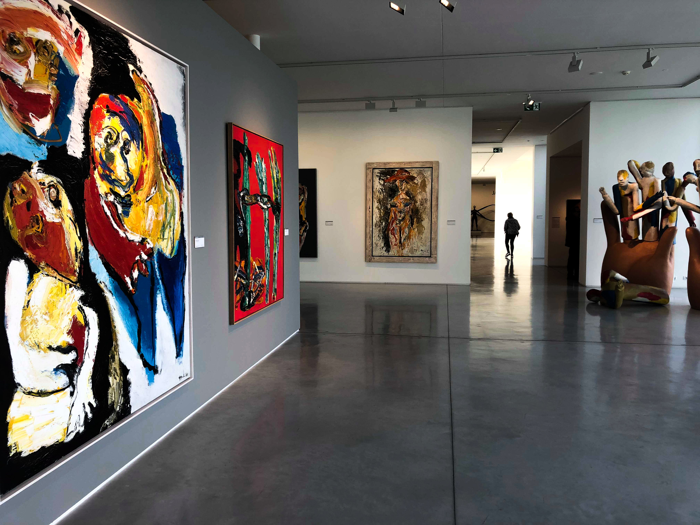
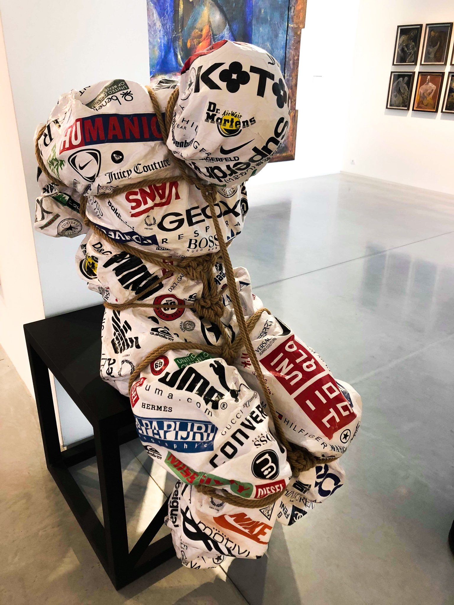
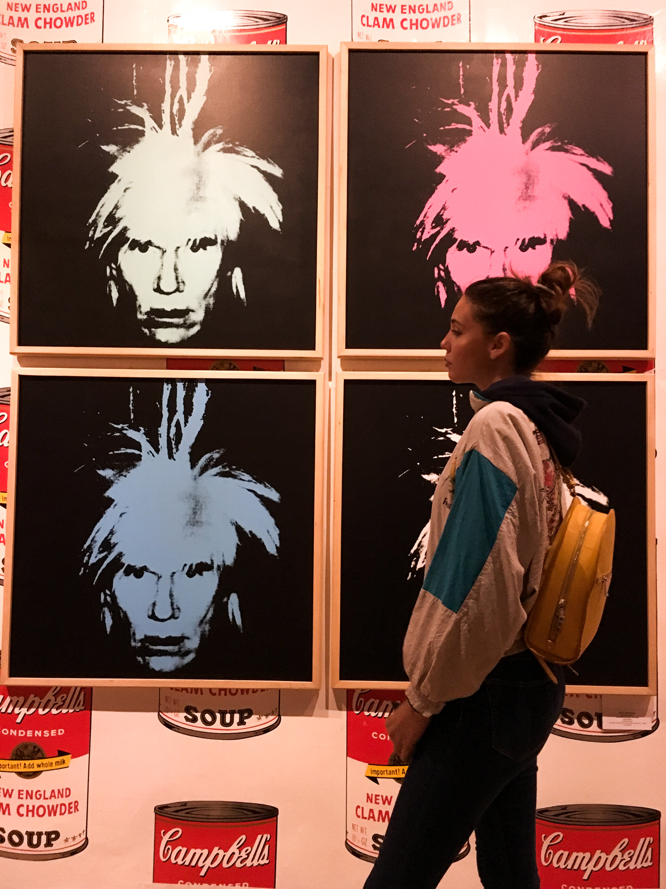
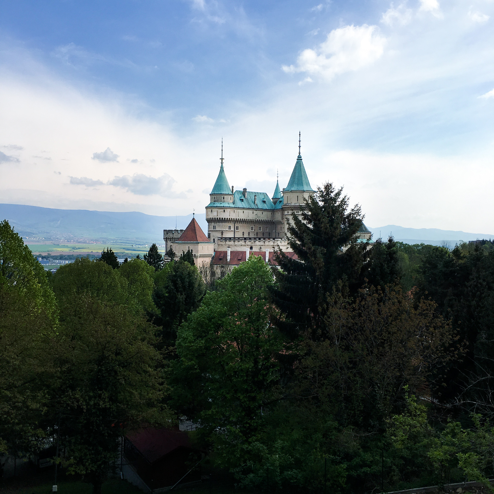
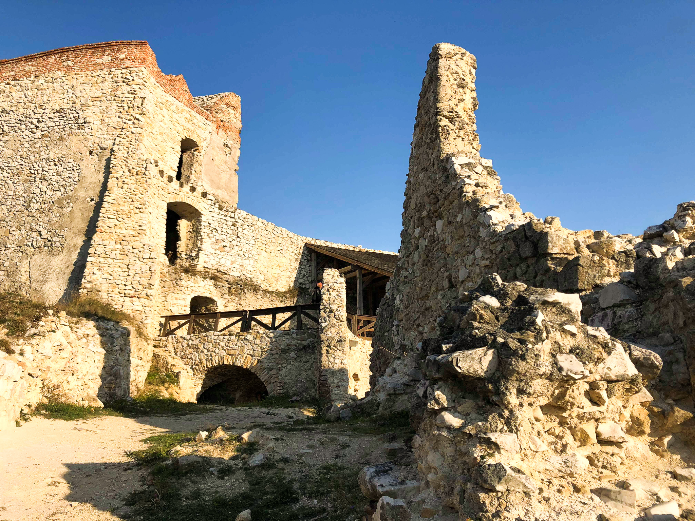
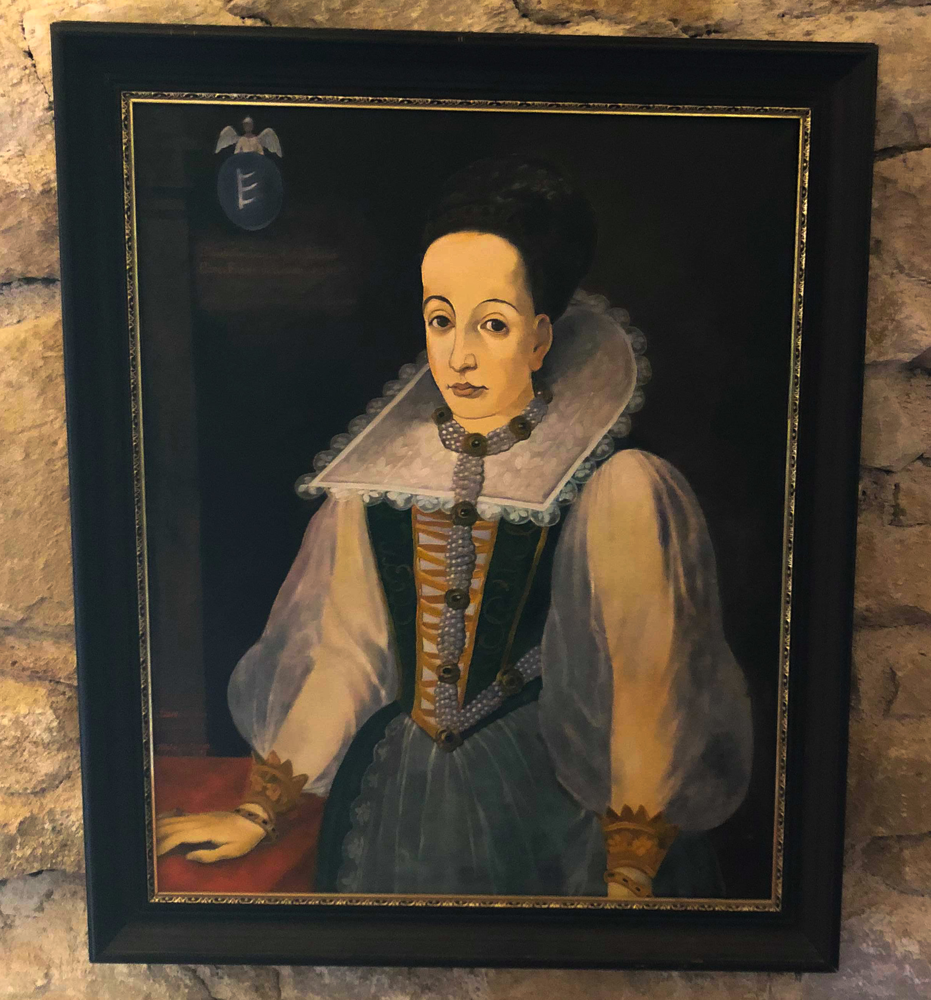

History of Slovakia
In this following article you can learn more and get some new information about Slovak history. I want to focus mainly on sightseeing and places associated with art, galleries, museums and castles. Slovakia has abundant cultural and historical, fortified and stately buildings. There are more than 100 castles and at least double this number of manor houses built in different historical eras. Here you have the most interesting sightseeing you have to see!
Danubiana Meulensteen Art Museum
This is exceptional museum of modern art located on the Danube river for interesting exhibitions and a permanent collection featuring the most renowned artists from Slovakia and abroad.
Danubiana Meulensteen Art Museum (by Nela Vallová)
Man tied with brands (by Nela Vallová)

Modern art (by Nela Vallová)
Andy Warhol museum of Modern Art
Andy Warhol Museum of Modern Art in Medzilaborce was founded in the year 1991 as the first one in the world dedicated to the personality of the King of pop-art. Today, the Museum is a specific trans-regional institution of the museum-gallery type, dealing mainly with current tendencies in contemporary art and especially the life and work of Andy Warhol.

Andy Warhol museum (by Nela Vallová)
Andy Warhol- paintings (by Nela Vallová)
Bojnice Castle
The ”fairy-tale” Bojnický zámok Castle is one of the most visited and most beautiful castles not only in Slovakia, but also in central Europe.Every year at the end of April and beginning of May there is a International Festival of Ghosts and Spooks. In those days the Bojnický zámok Castle becomes the meeting point of ghosts, spooks, witches, and vampires from all over the world. I also attended this event. It‘s a very pleasant experience full of fear and fun. I recommend it to all age.
Bojnice Castle (by Nela Vallová)
The Castle of Čachtice
Ruins of the tower above the village Čachtice in western Slovakia. It is the Castle of Čachtice, once residence of the “bloody countess Elizabeth Bátory”.Elizabeth Báthory lived here at the turn of the 16th and 17th centuries. For her sadist habits she was called ”the bloody countess”. She allegedly killed 600 young girls bathed in their blood in order to stay forever young and beautiful.
Today its picturesque ruins offer a nice panoramic view. I made a little trip here too. I recommend it especially to people with good physical condition because you can get to the ruins of this castle by long pedaling uphill.
The Castle of Čachtice (by Nela Vallová)
Elizabeth Báthory (by Nela Vallová)
Bratislava Castle
The massive rectangular building with four towers stands on a strategic place – right above the Danube river in the capital city of Slovakia. Known as the symbol of Bratislava, the castle is undoubtedly the most popular sight in the city you should definitely visit during your stay in Slovakia. From the castle you can see a beautiful view of the whole Bratislava. It is also a very popular place to relax and romantic walks.

Bratislava castle (source: K. Bauschardt)
By Nela Vallová, November 2019